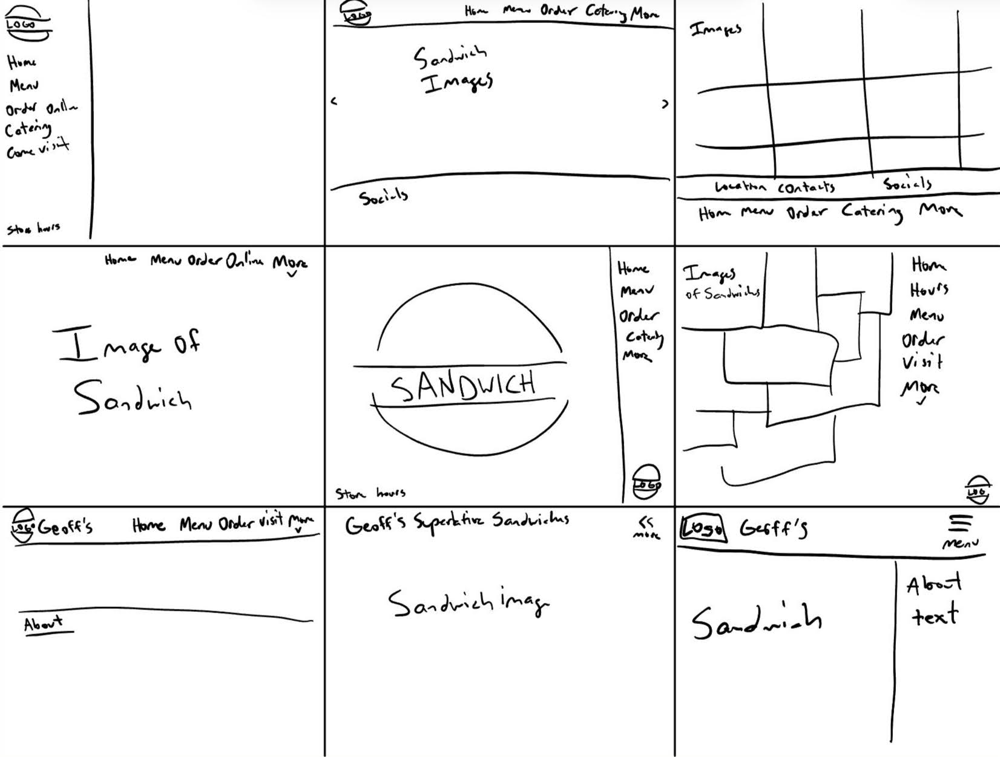
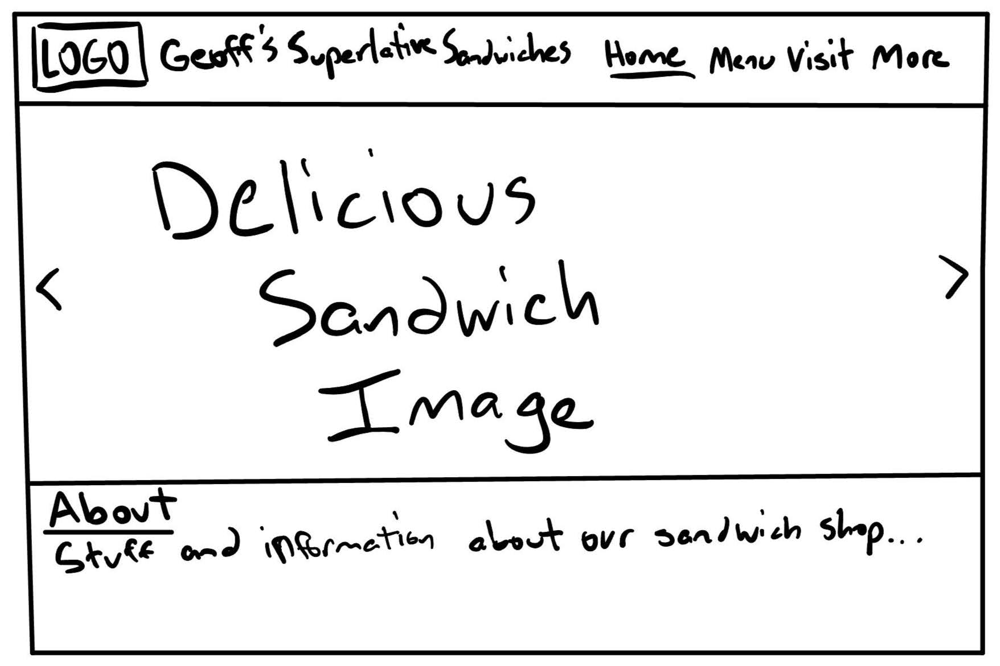
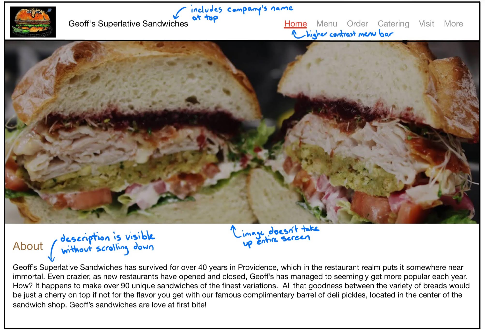
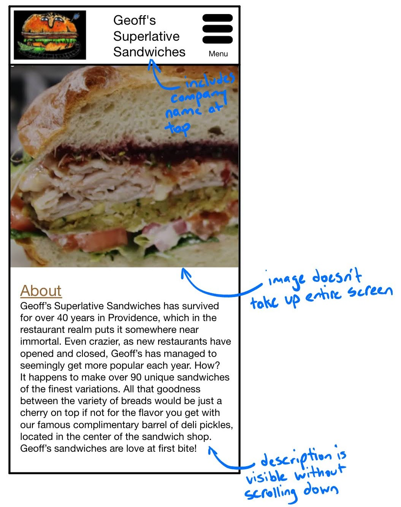
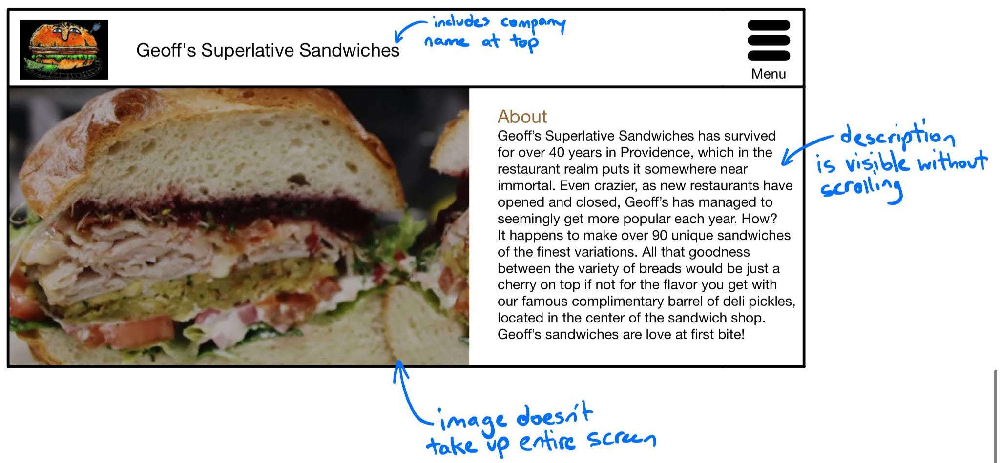
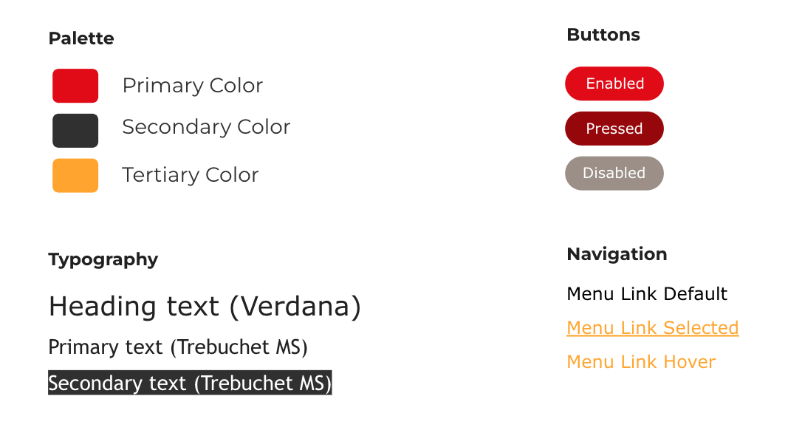
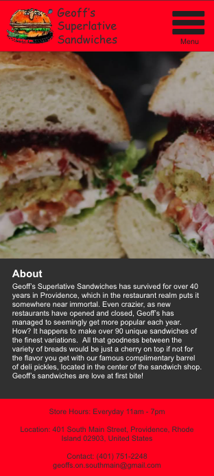
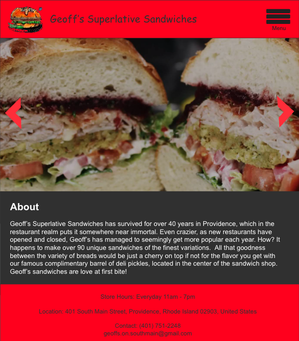

Responsive Redesign
Prototyping and web design | Spring 2024
The goal of this project is to practice the workflow of redesigning a simple website and hone the skills necessary to analyze and identify flaws in an existing interface. By creating low-fidelity and high-fidelity prototypes for various screen sizes, the groundwork will be laid to build a responsive website based on those prototypes.
2) brainstorm and complete a cycle of the design process from sketches to high fidelity,
3) learn how to make a responsive website through HTML/CSS, and
4) communicate design decisions and implementation process effectively via case study.
Original Site
https://geoffssuperlativesandwiches.com/Figure 1: Geoff's Superlative Sandwiches landing page


9 Sketches
Final Sketch
Low-Fidelity Wireframes
A low-fidelity wireframe is a basic, simplified representation of a digital interface or product. It is typically created early in the design process to quickly and efficiently explore ideas and concepts without getting bogged down in detail. Low-fidelity wireframes focus on the structure and layout of the interface rather than visual design elements like colors, typography, or images.
Figure 2: Low-fidelity desktop view
Figure 3: Low-fidelity mobile view
Figure 4: Low-fidelity tablet view
Overall, low-fidelity wireframes serve as a foundational step in the design process, helping designers to quickly visualize and iterate on ideas before investing time and resources into higher-fidelity prototypes and designs.
Visual Style Guide
A visual style guide in UI/UX design is a comprehensive document that outlines the visual elements and guidelines for maintaining consistency in the design of a digital product or interface. It serves as a reference for designers, developers, and other stakeholders involved in the creation and maintenance of the product.
By providing a unified set of visual guidelines, a style guide helps ensure consistency across different screens and interactions within a product, which ultimately improves the user experience and strengthens the brand identity.
High-Fidelity Wireframes
A high-fidelity wireframe is a detailed representation of a digital interface or product that closely resembles the final design. Unlike low-fidelity wireframes, which are simple and focus on structure and layout, high-fidelity wireframes include visual design elements such as colors, typography, and images. They provide a more polished and realistic depiction of the interface, allowing designers to communicate their design vision more effectively and accurately.
Figure 5: High-fidelity desktop view

Figure 6: High-fidelity mobile view
Figure 7: High-fidelity tablet view
A high-fidelity mockup represents the polished, final look of the product wishes to achieve. It employs the components and colors included in the visual style guide. Overall, high-fidelity wireframes play a crucial role in the design process by helping designers communicate their design vision, gather feedback, and create a more accurate representation of the final product before moving on to prototyping and development.